Capítulo 5 - Análise de Dados: Dilema Viés-Variância e Métricas de Avaliação
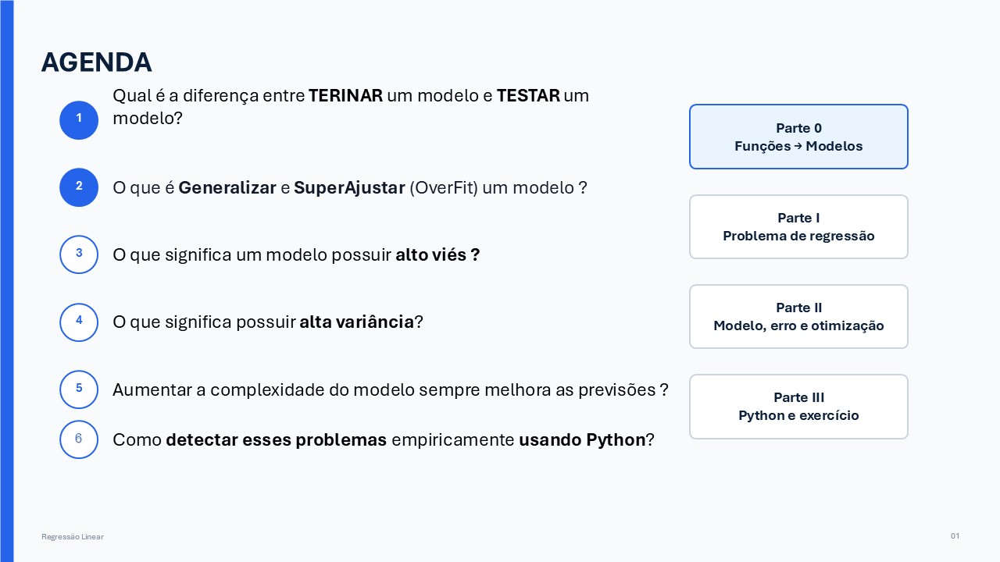
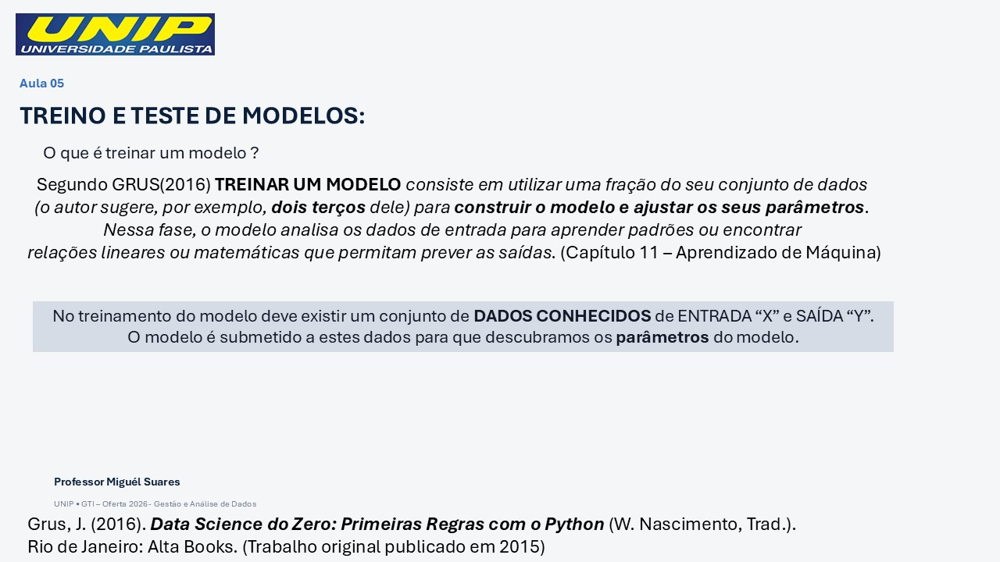
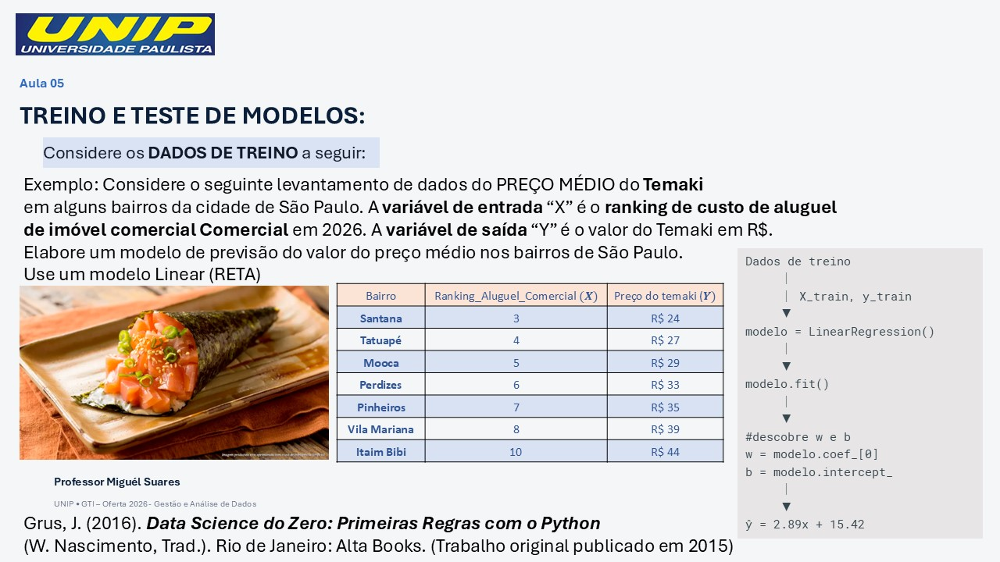
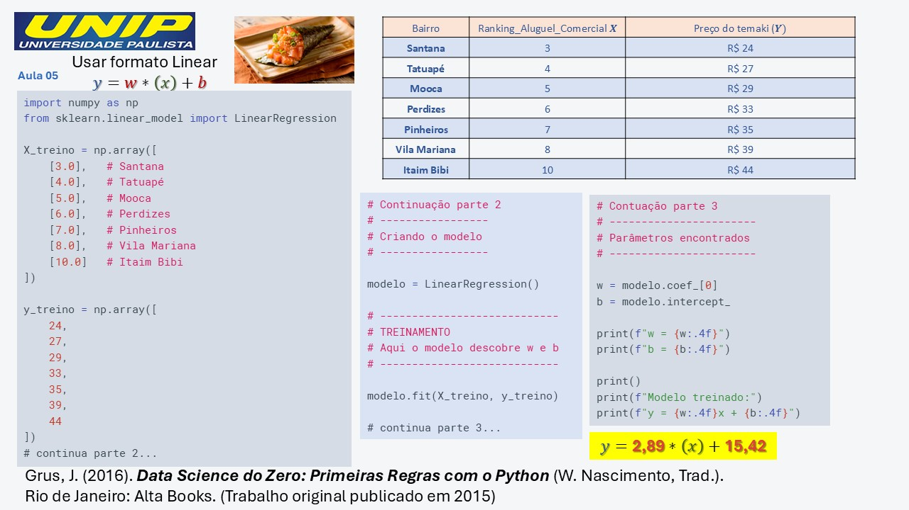
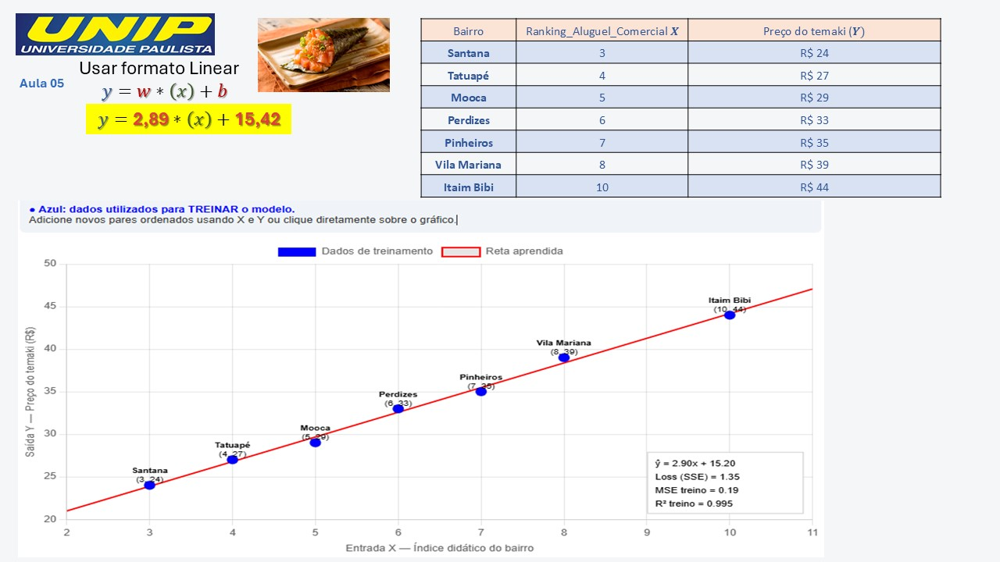
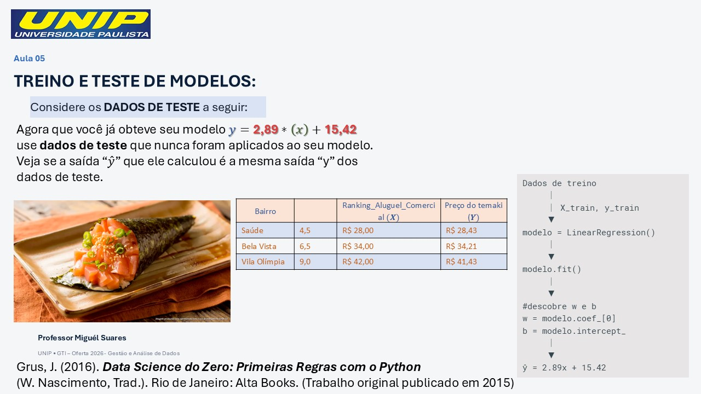
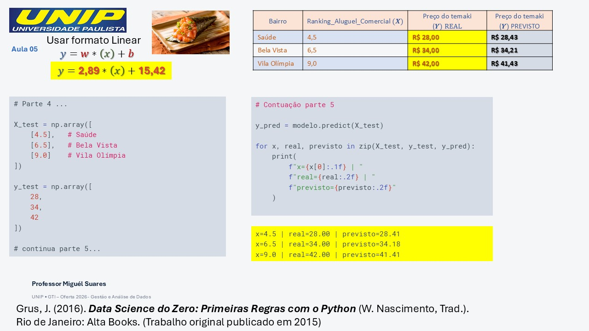
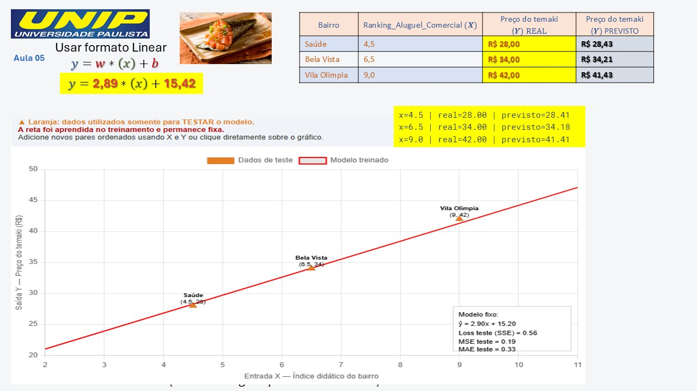
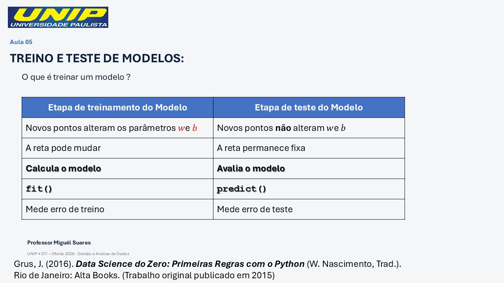
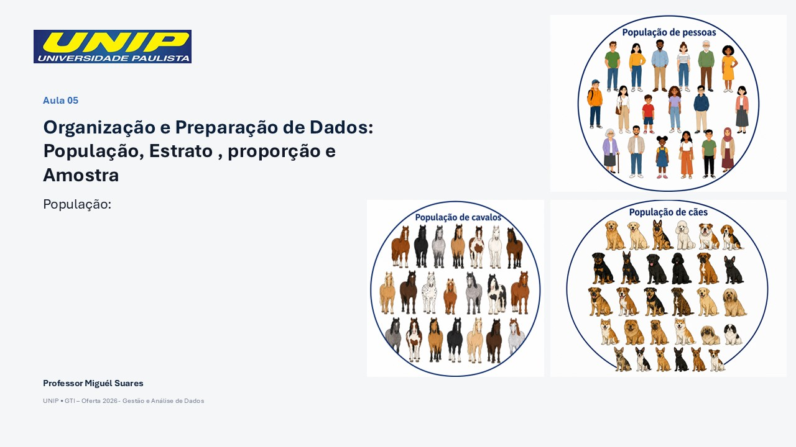
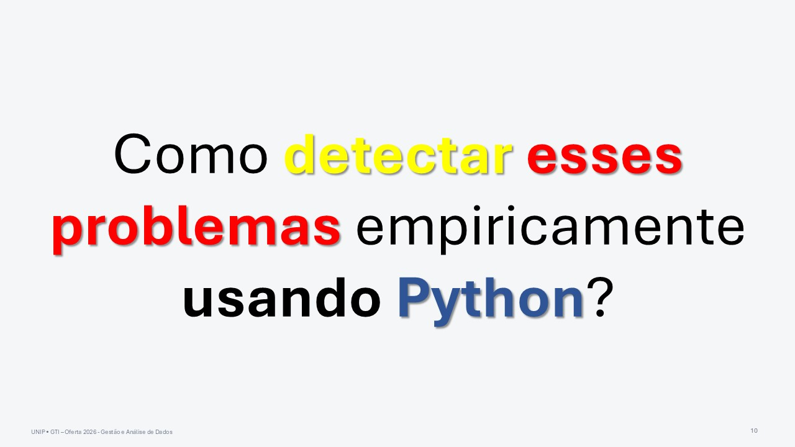
5.1 - Exercícios - Análise de Dados: Dilema Viés-Variância e Métricas de Avaliação
5.1.1 Exercícios de TREINO e TESTE de Modelos
5.1.1.1 Exercício 1 — Regressão Linear: tempo de entrega
Uma empresa de entregas quer estimar o tempo de entrega de um pedido a partir da distância até o cliente. Considere:
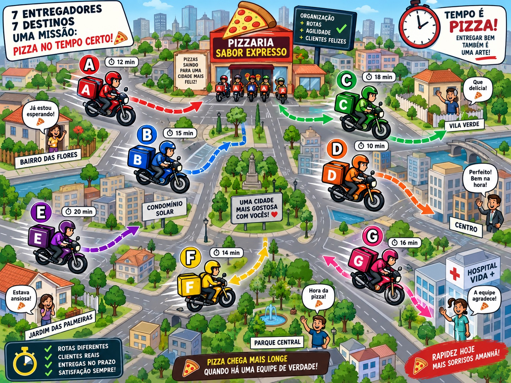
\[ \boxed{\text{Entrada } X = \text{distância da entrega, em km}} \]
\[ \boxed{\text{Saída } Y = \text{tempo de entrega, em minutos}} \]
A empresa coletou dados de 10 entregas. Sete serão usados para treinar o modelo e três para testar.
Dados de treino
Lembrando que no treino seu modelo é criado através da descoberta dos (melhores) valores dos PARÂMETROS w e b.
Segue o dataset de dados de treino do seu modelo.
| Entrega | Distância \(X\) km | Tempo \(Y\) min |
|---|---|---|
| A | 2 | 18 |
| B | 3 | 21 |
| C | 4 | 25 |
| D | 5 | 28 |
| E | 6 | 32 |
| F | 8 | 38 |
| G | 10 | 45 |
Use um modelo linear para resolver o problema. Seu modelo deve ter a “cara” de uma equação de reta:
\[ \hat y = wx+b \]
Resolva utilizando programação. No python utilize o pacote LinearRegression da biblioteca SciKitLearn:
Dados de teste
Uma vez criado o seu modelo \(\hat y = wx+b\), use os dados de teste a seguir
| Entrega | Distância \(X\) km | Tempo real \(Y\) min |
|---|---|---|
| H | 3.5 | 23 |
| I | 7 | 35 |
| J | 9 | 42 |
Descubra:
- Qual é a saída prevista pelo seu modelo para a entrega
H,IeJ? - Qual é a saída real para a entrega
H,IeJ? - Qual é a diferença entre a saída real e a saída prevista pelo seu modelo para
H,IeJ, também chamado de M.S.E. ?
5.1.1.1.1 Tarefas
import numpy as np
from sklearn.linear_model import LinearRegression
from sklearn.metrics import mean_squared_error
X_train = np.array([
[2],
[3],
[4],
[5],
[6],
[8],
[10]
])
y_train = np.array([
18,
21,
25,
28,
32,
38,
45
])
X_test = np.array([
[3.5],
[7],
[9]
])
y_test = np.array([
23,
35,
42
])
modelo = LinearRegression()
modelo.fit(X_train, y_train)
w = modelo.coef_[0]
b = modelo.intercept_
print("w =", w)
print("b =", b)
y_pred = modelo.predict(X_test)
print("Previsões:", y_pred)
mse = mean_squared_error(y_test, y_pred)
print("MSE teste =", mse)
nova_distancia = np.array([[7.5]])
tempo_estimado = modelo.predict(nova_distancia)
print("Tempo estimado:", tempo_estimado[0])A ideia conceitual do exercício é:
\[ \boxed{ \text{distância} \rightarrow \text{modelo linear} \rightarrow \text{tempo estimado} } \]
5.1.1.2 Exercício 2 — Regressão Logística: aprovação de crédito
Agora queremos trabalhar com classificação, não com previsão de um valor contínuo. Um banco está testando um modelo simplificado para classificar solicitações de crédito.
Considere:
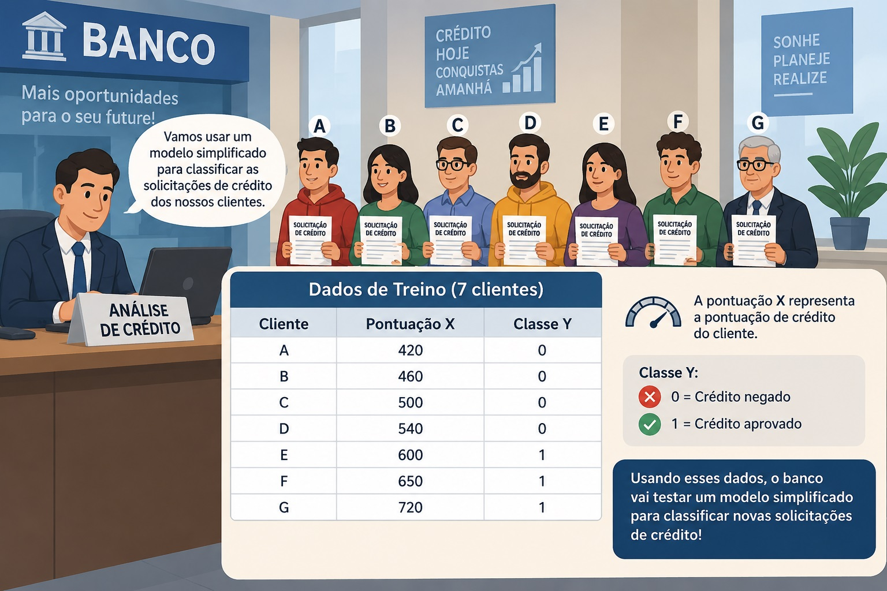
\[ \boxed{\text{Entrada } X = \text{pontuação de crédito}} \]
e:
\[ \boxed{\text{Saída } Y = \begin{cases} 0, & \text{crédito não aprovado}\\ 1, & \text{crédito aprovado} \end{cases}} \]
Temos novamente 10 clientes: 7 para treinamento e 3 para teste.
Dados de treino
| Cliente | Pontuação \(X\) | Classe \(Y\) |
|---|---|---|
| A | 420 | 0 |
| B | 460 | 0 |
| C | 500 | 0 |
| D | 540 | 0 |
| E | 600 | 1 |
| F | 650 | 1 |
| G | 720 | 1 |
Os alunos devem treinar um modelo de Regressão Logística:
\[ \text{% de Probabilidade de saída "Y" ser TRUE, tal que entrada vale X será igual a } \mathbf{\frac{1}{1+e^{-(wx+b)}} } \\ \boxed{P(Y=TRUE|X) = \frac{1}{1+e^{-(wx+b)}}} \]
Dados de teste
| Cliente | Pontuação \(X\) | Classe real \(Y\) |
|---|---|---|
| H | 480 | 0 |
| I | 580 | 1 |
| J | 680 | 1 |
5.1.1.2.1 Tarefas
- Crie
X_train,y_train,X_testey_test. - Treine uma
LogisticRegression. - Use o python para descubra os parâmetros :
\[ \text{Parâmetro } \boxed{w} \]
e
\[ \text{Parâmetro } \boxed{b} \]
- Calcule as probabilidades:
\[ \text{Probabilidade da saída Y ser classificada como TRUE} \\ \\ \boxed{P(Y=TRUE)} \]
para os três dados de teste.
-Classifique os três clientes usando o limiar (threshold) de 50%:
\[ \text{saída Y igual ou acima de 50%, classifica como TRUE, "pode emprestar dinheiro"} \\ \text{saída Y abaixo de 50%, classifica como FALSE, "não emprestar dinheiro"} \\ \boxed{\text{threshold}=0{,}5} \\ P(Y=TRUE|X) = \frac{1}{1+e^{-(wx+b)}} \\ \text{em outras palavras } \\ \text{considere como TRUE: empresta grana se }\frac{1}{1+e^{-(wx+b)}} \textbf{>= 50%} \\ \text{considere como FALSE: não empresta grana se }\frac{1}{1+e^{-(wx+b)}} \textbf{< 50% } \]
- Compare as classes previstas com as classes reais.
- Calcule a acurácia no conjunto de teste.
- Use o modelo para responder:
Um cliente com pontuação de crédito igual a 560 seria classificado como crédito aprovado ou não aprovado?
- Informe também a probabilidade estimada de aprovação.
5.1.1.2.2 Estrutura esperada em Python
import numpy as np
from sklearn.linear_model import LogisticRegression
from sklearn.metrics import accuracy_score
X_train = np.array([
[420],
[460],
[500],
[540],
[600],
[650],
[720]
])
y_train = np.array([
0,
0,
0,
0,
1,
1,
1
])
X_test = np.array([
[480],
[580],
[680]
])
y_test = np.array([
0,
1,
1
])
modelo = LogisticRegression()
modelo.fit(X_train, y_train)
w = modelo.coef_[0][0]
b = modelo.intercept_[0]
print("w =", w)
print("b =", b)
probabilidades = modelo.predict_proba(X_test)[:, 1]
print("Probabilidades:", probabilidades)
y_pred = modelo.predict(X_test)
print("Classes previstas:", y_pred)
acc = accuracy_score(y_test, y_pred)
print("Acurácia teste =", acc)
novo_cliente = np.array([[560]])
prob = modelo.predict_proba(novo_cliente)[0][1]
classe = modelo.predict(novo_cliente)[0]
print("Probabilidade de aprovação =", prob)
print("Classe prevista =", classe)